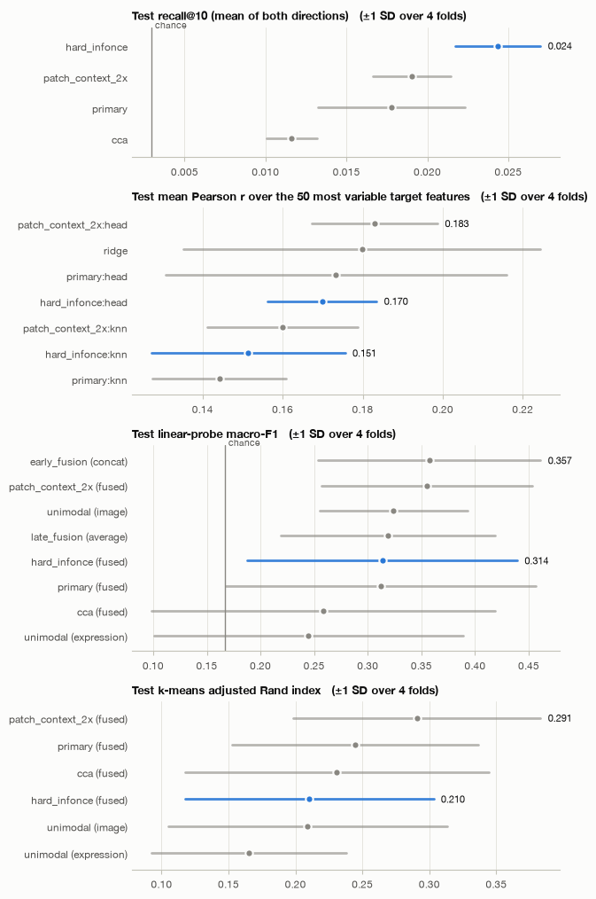
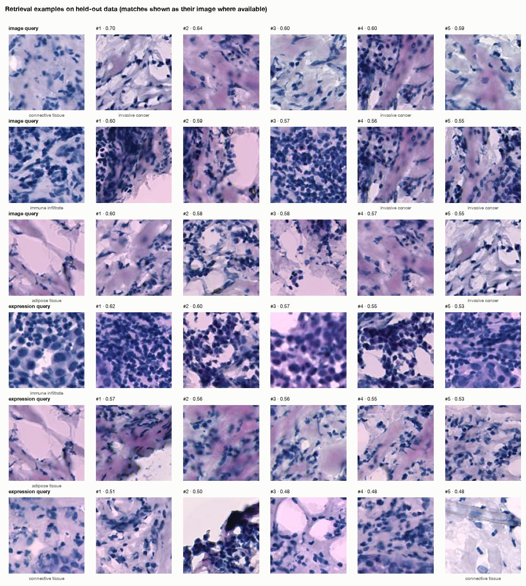
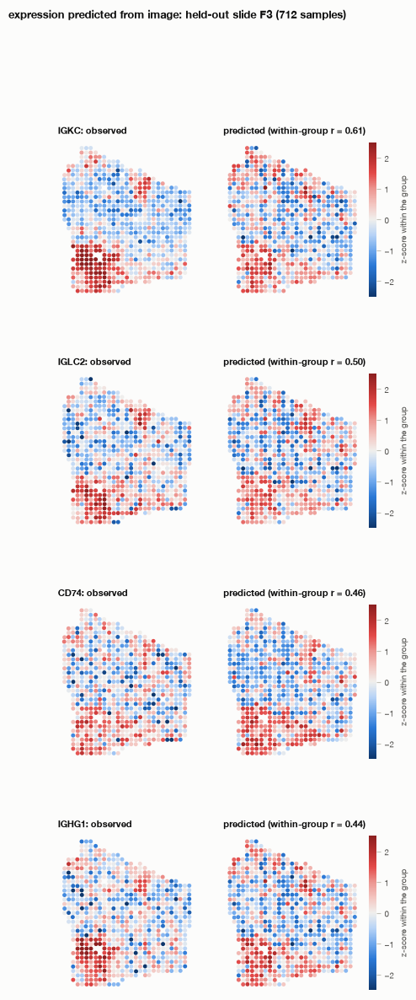
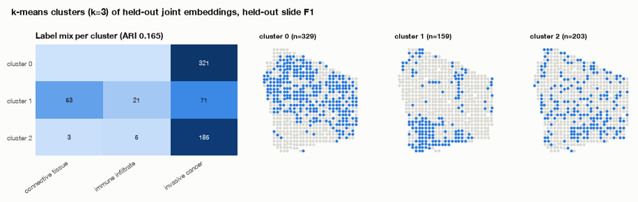
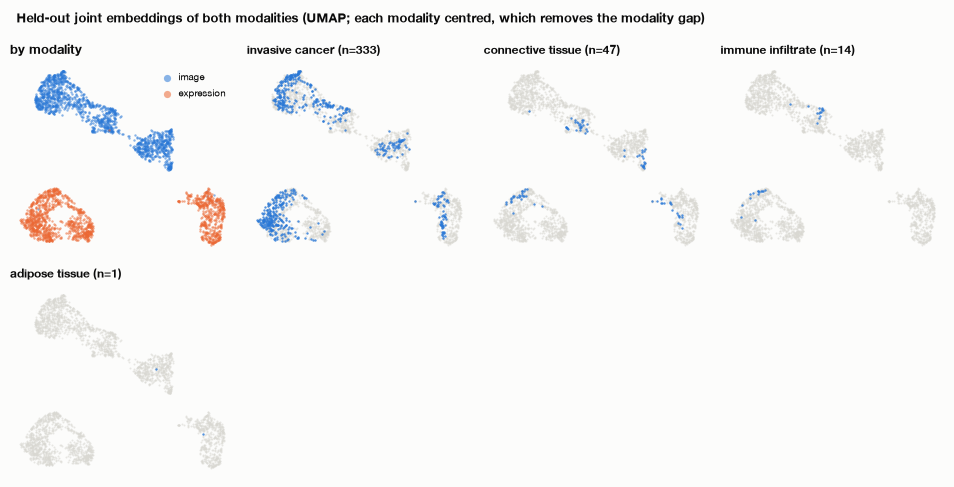
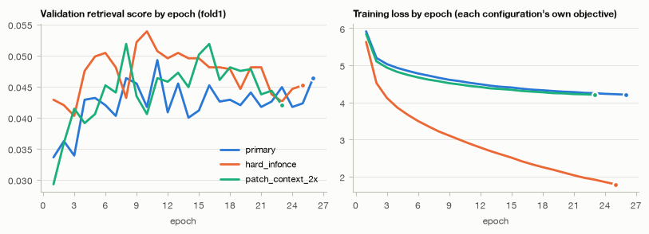

Multimodal representation learning report
Summary
The objective was to learn a joint embedding of H&E-type tissue patches and spot-level gene expression, to support image↔expression retrieval and the prediction of expression from histology. The agent used CLIP-style contrastive alignment: a frozen phikon image encoder and an MLP trained from scratch on 100 PCs of 2,000 highly variable genes, with a joint image→expression regression head. Evaluation used grouped 4-fold cross-validation by patient (8 patients). After validation, the critic replaced the soft-InfoNCE primary with the hard-InfoNCE comparison (validation R@10 0.0402 vs 0.0335, better in 4 of 4 folds), and the switch was kept.
On held-out patients, hard-InfoNCE reached a mean retrieval R@10 of 0.024 (±1 SD 0.003 over 4 folds). Chance is 0.003 and the CCA baseline is 0.012. The paired difference over CCA is +0.013 (SD 0.002), with hard-InfoNCE better in 4/4 folds. This is a consistent but small absolute gain.
On prediction from histology, the regression head (mean Pearson over the top-50 genes 0.170) did not beat ridge regression (0.180; difference −0.010, SD 0.053, better in 2/4 folds). For tissue-class probing and clustering, the joint embedding tied with or fell below unimodal and fusion baselines. Held-out embeddings group more by patient (silhouette 0.38) than by tissue label (0.05).
Bottom line: integration produced real but weak cross-modal alignment beyond linear CCA. It gave no demonstrated gain over simpler methods for expression prediction or for label structure.
Data and objective
Data: spatial transcriptomics (spatial_anndata) with n = 13,620 spots from 36 slides and 8 patients. The modalities are expression (11,871 genes, integer counts), spot-centred image patches (stained tissue) and spatial coordinates. One spot lacks expression and was excluded from alignment, leaving 13,619 image–expression pairs.
Features of the profile that drove the decisions:
- Strong patient structure. Patient explains 77% of the variance of the top expression components (group silhouette 0.634), while the tissue label explains 16% (0.158). The agent therefore held out whole patients and strengthened head regularisation.
- Spatial autocorrelation. Median Moran's I is 0.145, so neighbouring spots are not independent. This also argues against spot-level splits.
- Near-twin expression profiles. 23% of spots (0.232) are near-twins in expression. This motivated soft InfoNCE targets and makes exact-partner retrieval inherently hard.
- Sparse counts. 83% of entries are zero and the median library size is 3,231, which led to library-size normalisation, log1p, HVG selection and PCA.
- Stain and scanner variation. 28% of the variance in mean patch colour lies between groups, which led to Reinhard colour normalisation.
- Geometry. Spot diameter is about 145 px and centre-to-centre spacing is about 273 px (spacing/diameter 1.881). This defined the patch-size options.
- Sparse, imbalanced labels. The
labelcolumn (6 tissue classes) covers only 3,157 spots (23%). Classes range from 1,758 (invasive cancer) to 97 (breast glands), an imbalance ratio of 18.124. Labels were used for evaluation only.
Objective: joint embedding, retrieval (primary task; metric mean R@10, averaged over both directions) and cross-modal prediction of expression from image.
What the agent decided and why
- Split. Grouped 4-fold CV by
patient. Each fold tests 2 patients and uses 1 more patient for validation (early stopping and model selection). Test sizes ran from 3,184 to 3,561 spots and training sizes from 7,993 to 8,709. The reason: patient explains 77% of expression variance and spots are spatially correlated, so spot-level splits would leak. Each fold therefore trains on only about 5 patients. - Strategy. Contrastive alignment (InfoNCE) was chosen because all three tasks need a shared space and there are about 8,511 training pairs. A regression head (
cross_modal_regression, weight 1.0) was added jointly for the prediction task. - Image encoder. Frozen phikon, the best of 4 candidates on every screening metric. Screening used 2,000 training and 500 validation spots from separate groups:
- alignment recall@10: 0.087 vs ≤0.063 for plip_image, biomedclip_image and dinov2_base;
- ridge R²: 0.215 vs ≤0.184;
- probe macro-F1: 0.43 vs ≤0.39.
Fine-tuning was not tried because no pre-aligned dual encoder was available. Freezing keeps the number of trainable parameters small relative to n. - Expression encoder. A 2-layer MLP (512 hidden) trained from scratch, because no pretrained encoder applies to this matrix. Preprocessing was median library-size normalisation, log1p, the 2,000 most variable genes and PCA to 100 components, all fitted on training folds only. The PCA step was justified by fewer than 5 samples per feature at 2,000 genes. - Image preprocessing. Patches cover 1.0 × the spot diameter (145 px), i.e. the tissue the RNA came from. A 2× context patch (290 px) was run as a comparison. Reinhard normalisation addressed the 28% between-group colour variance. - Loss. Soft InfoNCE in the original primary, because of the 23% near-twins. Hard InfoNCE was run as a controlled comparison that changes only the loss. - Hyperparameters. Embedding 256, batch 512 (511 negatives per positive), lr 0.001, temperature learned from an initial 0.07, early stopping with patience 15, and a 180 s cap per fit. The LLM planner raised dropout from 0.1 to 0.2 and weight decay from 1e-4 to 1e-3 in all three configurations. Its reason was the risk of memorising patient-specific offsets when training on about 5 patients. - Evaluation. - Primary metric: retrieval mean R@10 on held-out patients. - Baselines: chance, unimodal features, CCA, ridge regression, early fusion (concatenation) and late fusion (averaging). - Prediction method fixed in advance: the configuration's own head, or kNN in the joint space as a secondary readout. - Test data were scored once, after the critic.
Configurations trained
| configuration | role | strategy | encoders | regime | losses | dim | lr | cap (s) |
|---|---|---|---|---|---|---|---|---|
| primary | primary | contrastive_alignment | image: phikon, expression: mlp | frozen, from_scratch | soft_infonce x 1.0, cross_modal_regression x 1.0 | 256 | 0.001 | 180 |
| hard_infonce | comparison | contrastive_alignment | image: phikon, expression: mlp | frozen, from_scratch | infonce x 1.0, cross_modal_regression x 1.0 | 256 | 0.001 | 135 |
| patch_context_2x | comparison | contrastive_alignment | image: phikon, expression: mlp | frozen, from_scratch | soft_infonce x 1.0, cross_modal_regression x 1.0 | 256 | 0.001 | 135 |
Encoder screening (frozen features, training vs validation samples of fold 1)
| image | expression | cca_recall_at_10 | zero_shot_recall_at_10 | alignment_recall_at_10 | ridge_r2 | probe_macro_f1 |
|---|---|---|---|---|---|---|
| phikon | mlp | 0.087 | – | 0.087 | 0.215 | 0.432 |
| plip_image | mlp | 0.057 | – | 0.057 | 0.175 | 0.340 |
| biomedclip_image | mlp | 0.063 | – | 0.063 | 0.026 | 0.392 |
| dinov2_base | mlp | 0.063 | – | 0.063 | 0.184 | 0.351 |
Results on held-out test data
Retrieval (primary; test, mean ± 1 SD over 4 folds; chance R@10 0.003)
| Representation | R@10 | Median rank |
|---|---|---|
| hard_infonce (final) | 0.024 ± 0.003 | 584.0 |
| patch_context_2x | 0.019 ± 0.002 | 723.812 |
| soft-InfoNCE primary | 0.018 ± 0.005 | 740.312 |
| CCA | 0.012 ± 0.002 | 1047.125 |
- Hard-InfoNCE beats CCA by +0.013 (SD 0.002) in 4/4 folds. It also beats the soft-InfoNCE model in every fold: per-fold 0.0225/0.0218/0.0269/0.0263 vs 0.0143/0.0145/0.024/0.0183. This confirms the validation-based switch on independent test data.
- Absolute performance is low. R@1 is 0.003 and the median rank of the true partner is 584.0. With a fixed 1,000-spot gallery, R@10 is 0.069 (CCA 0.034).
- Retrieval is symmetric: image→expression R@10 is 0.025 and expression→image 0.024.
- Retrieved neighbours do share tissue class more than chance (label match@10 0.601 vs 0.448 chance), so the space carries coarse tissue semantics even when it misses the exact spot.
- Test R@10 (0.024) is below the validation mean (0.0402). Validation also served for model selection, so validation scores are optimistic.
Prediction of expression from histology (mean Pearson r, top-50 genes)
- Hard-InfoNCE head: 0.170 ± 0.014.
- Ridge: 0.180 ± 0.045. The difference is −0.010 (SD 0.053), with the head better in 2/4 folds, so this is a tie.
- patch_context_2x head: 0.183 ± 0.016, numerically the best. Its ±1 SD band overlaps ridge's.
- kNN readouts in the joint space are lower for every configuration (0.144–0.160).
- Within-patient correlations are lower than pooled ones: hard head 0.142, ridge 0.146. Part of the pooled signal therefore reflects between-patient differences.
- Over all genes, mean r is about 0.09 (hard head 0.090, ridge 0.093). The number of genes with r > 0.3 is 128.75 for the hard head vs 137.75 for ridge and 149.25 for patch_context_2x.
- In fold 1 the best-predicted genes were PTMS (0.6691), KRT19 (0.642), COL3A1 (0.6002) and COL1A2 (0.584). These are epithelial and stromal markers that are plausibly visible in morphology.
Tissue-class linear probe (macro-F1; chance 0.167)
- Every representation is above chance, but fold-to-fold spread is large (SDs 0.06–0.17).
- Hard-InfoNCE fused: 0.314 ± 0.126.
- vs unimodal (0.341): difference −0.027;
- vs early fusion (0.357): difference −0.044;
- vs late fusion (0.319): difference −0.006;
- all three in 2/4 folds, so all are ties.
- It beats CCA fused (0.258) by +0.055 (SD 0.049) in 4/4 folds.
- The highest probe score was patch_context_2x image embedding, 0.376 ± 0.058.
Clustering (ARI against tissue labels)
- Hard-InfoNCE fused: 0.210 ± 0.093.
- vs unimodal (0.243): difference −0.032, better in 1/4 folds;
- vs CCA fused (0.231): difference −0.020, better in 2/4 folds.
- Again the best was patch_context_2x fused, 0.291 ± 0.092.
Warning flag: batch confounding. Held-out embeddings cluster more by patient (silhouette 0.38) than by label (0.05). The joint space has not removed patient effects, which is consistent with patient explaining 77% of expression variance.

Test metrics for every configuration (blue: final configuration) and baseline (grey).
recall@10 (mean of both directions) (primary metric)
| representation | kind | mean | lower | upper | interval |
|---|---|---|---|---|---|
| hard_infonce | configuration | 0.024 | 0.022 | 0.027 | ±1 SD over 4 folds |
| patch_context_2x | configuration | 0.019 | 0.017 | 0.021 | ±1 SD over 4 folds |
| primary | configuration | 0.018 | 0.013 | 0.022 | ±1 SD over 4 folds |
| cca | baseline | 0.012 | 0.010 | 0.013 | ±1 SD over 4 folds |
Retrieval
| representation | R@1 | R@5 | R@10 | image→expression R@10 | expression→image R@10 | median rank | chance R@10 | label match@10 | label chance |
|---|---|---|---|---|---|---|---|---|---|
| primary | 0.002 | 0.009 | 0.018 | 0.018 | 0.017 | 740.312 | 0.003 | 0.567 | 0.448 |
| hard_infonce | 0.003 | 0.013 | 0.024 | 0.025 | 0.024 | 584.000 | 0.003 | 0.601 | 0.448 |
| patch_context_2x | 0.002 | 0.010 | 0.019 | 0.020 | 0.018 | 723.812 | 0.003 | 0.579 | 0.448 |
| cca | 0.001 | 0.006 | 0.012 | 0.012 | 0.011 | 1047.125 | 0.003 | 0.531 | 0.448 |
Cross-modal prediction
| method | mean r (top 50) | median r | within-group r | mean r (all) | features r > 0.3 |
|---|---|---|---|---|---|
| patch_context_2x:head | 0.183 | 0.179 | 0.137 | 0.095 | 149.2 |
| ridge | 0.180 | 0.186 | 0.146 | 0.093 | 137.8 |
| primary:head | 0.173 | 0.203 | 0.139 | 0.098 | 147.5 |
| hard_infonce:head | 0.170 | 0.163 | 0.142 | 0.090 | 128.8 |
| patch_context_2x:knn | 0.160 | 0.149 | 0.135 | 0.083 | 119.2 |
| hard_infonce:knn | 0.151 | 0.139 | 0.135 | 0.084 | 98 |
| primary:knn | 0.144 | 0.136 | 0.132 | 0.083 | 107.5 |
Classification and clustering
| representation | view | probe macro-F1 | balanced acc. | kNN macro-F1 | ARI | NMI |
|---|---|---|---|---|---|---|
| patch_context_2x | image | 0.376 | 0.528 | 0.339 | 0.275 | 0.345 |
| early_fusion | concat | 0.357 | 0.505 | – | – | – |
| patch_context_2x | fused | 0.355 | 0.526 | 0.375 | 0.291 | 0.337 |
| cca | image | 0.342 | 0.465 | 0.335 | 0.179 | 0.276 |
| unimodal | image | 0.324 | 0.482 | 0.349 | 0.209 | 0.312 |
| hard_infonce | image | 0.324 | 0.480 | 0.336 | 0.220 | 0.294 |
| late_fusion | average | 0.319 | 0.464 | – | – | – |
| hard_infonce | fused | 0.314 | 0.443 | 0.323 | 0.210 | 0.296 |
| primary | fused | 0.312 | 0.409 | 0.330 | 0.244 | 0.298 |
| primary | image | 0.296 | 0.424 | 0.328 | 0.189 | 0.294 |
| cca | fused | 0.258 | 0.337 | 0.289 | 0.231 | 0.311 |
| patch_context_2x | expression | 0.250 | 0.379 | 0.226 | 0.160 | 0.230 |
| hard_infonce | expression | 0.250 | 0.356 | 0.264 | 0.164 | 0.232 |
| unimodal | expression | 0.245 | 0.346 | 0.232 | 0.165 | 0.234 |
| primary | expression | 0.237 | 0.349 | 0.235 | 0.161 | 0.220 |
| cca | expression | 0.229 | 0.355 | 0.197 | 0.129 | 0.221 |
Embedding geometry
| representation | alignment | uniformity a | uniformity b | modality gap | eff. rank a | eff. rank b | group silhouette |
|---|---|---|---|---|---|---|---|
| primary | 1.292 | -1.708 | -1.554 | 0.676 | 119.919 | 130.369 | 0.422 |
| hard_infonce | 1.302 | -2.326 | -1.906 | 0.557 | 122.237 | 118.618 | 0.344 |
| patch_context_2x | 1.453 | -1.993 | -1.683 | 0.699 | 126.920 | 128.116 | 0.423 |
| cca | 1.754 | -3.163 | -2.755 | 0.466 | 57.815 | 58.000 | 0.265 |
Did integration help?
- vs linear alignment (CCA), retrieval: yes, clearly but modestly. R@10 was 0.024 vs 0.012, a difference of +0.013 (SD 0.002) in 4/4 folds. The across-fold differences do not approach zero. This is the only metric where the learned joint space shows a consistent advantage.
- vs ridge regression, prediction from image: no. The head scored 0.170 vs 0.180 for ridge (difference −0.010, SD 0.053, 2/4 folds); the difference's SD easily spans zero. Within-patient r is 0.142 vs 0.146. Learning a joint space did not improve on a direct linear map from frozen image features. The patch_context_2x head (0.183) is numerically above ridge, but the evidence does not distinguish them.
- vs each modality alone, probe and clustering: no.
- Probe macro-F1 was 0.314 vs 0.341 for unimodal (−0.027, 2/4 folds).
- ARI was 0.210 vs 0.243 (−0.032, 1/4 folds).
- The per-modality embeddings from the joint model (image 0.324, expression 0.250) are almost identical to raw unimodal features (image 0.324, expression 0.245).
- vs fusion of unimodal features: no. Early fusion scored 0.357 (difference −0.044) and late fusion 0.319 (difference −0.006), both 2/4 folds.
- vs CCA on the probe: yes. Fused macro-F1 was 0.314 vs 0.258, +0.055 (SD 0.049), 4/4 folds.
Summary: contrastive integration buys better exact-pair retrieval than linear CCA. For expression prediction and tissue-class structure it ties with simpler methods (ridge, unimodal features, concatenation). That tie is a substantive finding: frozen phikon features with a linear model capture most of the image→expression signal that is available here.
| metric | versus | final config | alternative | difference | SD | 95% interval | folds better | folds |
|---|---|---|---|---|---|---|---|---|
| retrieval_mean_recall_at_10 | cca | 0.024 | 0.012 | 0.013 | 0.002 | – | 4 | 4 |
| prediction_mean_pearson_top50 | ridge | 0.170 | 0.180 | -0.010 | 0.053 | – | 2 | 4 |
| probe_macro_f1 | unimodal | 0.314 | 0.341 | -0.027 | 0.075 | – | 2 | 4 |
| probe_macro_f1 | early_fusion | 0.314 | 0.357 | -0.044 | 0.063 | – | 2 | 4 |
| probe_macro_f1 | late_fusion | 0.314 | 0.319 | -0.006 | 0.086 | – | 2 | 4 |
| probe_macro_f1 | cca | 0.314 | 0.258 | 0.055 | 0.049 | – | 4 | 4 |
| clustering_ari | unimodal | 0.210 | 0.243 | -0.032 | 0.073 | – | 1 | 4 |
| clustering_ari | cca | 0.210 | 0.231 | -0.020 | 0.074 | – | 2 | 4 |
Downstream analyses

Held-out queries and their five nearest matches in the joint space.

Observed and predicted values of the best-predicted target features on one held-out group (z-scores within the group).

k-means clusters of held-out joint embeddings and their label composition.

Held-out joint embeddings of both modalities.

Validation score and training loss by epoch.
Best-predicted target features (hard_infonce:head):
| feature | test r |
|---|---|
| PTMS | 0.669 |
| AP000769.1 | 0.654 |
| PCSK7 | 0.645 |
| KRT19 | 0.642 |
| COL3A1 | 0.600 |
| COL1A2 | 0.584 |
Critic review
Critic's assessment (on validation data only).
- The original soft-InfoNCE primary had validation R@10 of 0.0335. That is above chance (about 0.0054 at validation gallery size) and above CCA (0.0179; +0.016 ± 0.009, 4/4 folds). The critic called this alignment "real but weak".
- The primary tied with ridge on prediction (0.148 vs 0.152, 2/4 folds) and tied with the unimodal and CCA baselines on clustering.
- Hard InfoNCE beat the primary on R@10 in every fold (0.0539/0.0211/0.0347/0.0510 vs 0.0492/0.0148/0.0319/0.0382). The automated flag had called this gap "within noise". The critic argued that the paired comparison is consistent: paired t about 3.0 with 3 df, sign test 4/4. It described this as "moderate evidence, not conclusive".
- The critic gave a mechanism: soft targets reward retrieving look-alike spots (23% near-twins) rather than the exact partner, which is what R@10 scores.
- It also noted faster overfitting under hard InfoNCE. Train loss fell to about 2.0 while validation loss stayed around 8–9, and best epochs came as early as 3. Early stopping on retrieval was judged to handle this.
Revision. The action was switch_primary to hard_infonce. No retraining was needed, and the revision ran.
Kept? Yes. Validation R@10 was 0.0402 revised vs 0.0335 original (+0.0066, better in 4/4 folds).
Did it hold on test? Yes. On the single post-critic test evaluation, hard-InfoNCE scored 0.024 vs 0.018 for the soft primary, better in each of the 4 folds.
The switch had a cost in prediction, though not a significant one: the hard-InfoNCE head scored 0.170 vs 0.173 for the soft primary head, both within noise of ridge. The critic did not act on patch_context_2x (validation 0.038 vs 0.034). On test, that configuration gave the best prediction and probe/clustering scores but lower retrieval (0.019).
| trigger | severity | finding |
|---|---|---|
| no_clear_gain_over_ridge | info | No clear difference between the primary configuration and ridge on prediction_mean_pearson_top50 (mean difference -0.004; primary better in 2/4 folds). |
| no_clear_gain_over_unimodal | info | No clear difference between the primary configuration and unimodal on clustering_ari (mean difference +0.033; primary better in 1/4 folds). |
| no_clear_gain_over_cca | info | No clear difference between the primary configuration and cca on clustering_ari (mean difference +0.026; primary better in 3/4 folds). |
| comparison_better | info | Comparison 'hard_infonce' scores higher than the primary on retrieval_mean_recall_at_10 (0.040 vs 0.034); within noise. |
| comparison_better | info | Comparison 'patch_context_2x' scores higher than the primary on retrieval_mean_recall_at_10 (0.038 vs 0.034); within noise. |
Limitations
- Few independent units. There are only 8 patients and 4 folds, so ±1 SD bands rest on 4 values and the formal tests (paired t with 3 df, a 4/4 sign test) have little power. Most "no clear difference" verdicts are inconclusive rather than evidence of equivalence.
- Validation reuse. Patient D was the validation group in both fold 3 and fold 4 (and a test patient in fold 2). The same validation patients drove early stopping, the critic's switch and the hyperparameter choices, so validation scores (e.g. 0.0402) are optimistic relative to test (0.024).
- Weak absolute retrieval. R@10 is 0.024 and the median partner rank is 584.0. The embedding is not yet useful for spot-exact lookup. Near-twin spots (23%) cap achievable exact-pair recall, and the record does not separate that ceiling from model weakness.
- Patient confounding. Held-out embeddings cluster by patient (silhouette 0.38) far more than by label (0.05). Within-patient prediction r (0.142) is below pooled r (0.170), so part of the apparent signal is between-patient.
- Possible pretraining overlap. phikon was pretrained on TCGA histology tiles, which may include similar stained tissue. No zero-shot score is involved, but overlap may favour phikon in screening and in the frozen-feature baselines. Its screening margin (0.087 vs ≤0.063) should be read with this in mind.
- Labels. Labels cover only 23% of spots, with an 18.124 imbalance ratio. Probe and ARI estimates are noisy (probe SDs up to 0.144 for the soft primary's fused embedding), and per-class performance on rare classes such as breast glands (97 spots) is not reported.
- Limited search. Only three configurations were tried, all with a frozen image encoder; fine-tuning was not tried. The patch-size comparison suggested that 2× context helps prediction and label structure (prediction 0.183, ARI 0.291) but not retrieval, and this was not followed up. The loss and patch-size changes were tested only separately, never together.
- Modest prediction. Mean r over all genes is about 0.09. Strong predictions (r > 0.6 in fold 1) are confined to a handful of marker genes and come from a single fold.
- Unused modality. Spatial coordinates were used only for diagnostics, not as an input to the joint model.
Number check
All 217 numbers in the prose above were found in the computed outputs.
Reproducibility
- Command:
mmagent run --data data/stimage_her2 --objective 'Learn joint embeddings of tissue image patches and spot-level gene expression to enable cross-modal retrieval and prediction of gene expression from histology.' --out outputs/generated_report_1 - Seed 774; device mps (Apple GPU (MPS) on arm64); projection heads on cpu.
- LLM: claude-opus-5-5 via the Claude CLI, 3 call(s), $0.69; prompts and replies in
llm_transcript.json;--replay outputs/generated_report_1repeats them without calling a model. - Embeddings:
embeddings/held_out_embeddings.npz(4,882 held-out rows, subsampled, float16). - Files: decision_log.json, plan.json/plan.md, profile.json, screening.json, evaluation.json, tables/, figures/, downstream/, methods_summary.md, model_summary.json, run_manifest.json.
Appendix: training summaries
| configuration | fold | best epoch | epochs | stopped because | best val score | trainable params |
|---|---|---|---|---|---|---|
| primary | fold1 | 11 | 26 | no validation improvement for 15 epochs | 0.049 | 1,868,753 |
| primary | fold2 | 2 | 17 | no validation improvement for 15 epochs | 0.016 | 1,868,753 |
| primary | fold3 | 3 | 18 | no validation improvement for 15 epochs | 0.032 | 1,868,753 |
| primary | fold4 | 11 | 26 | no validation improvement for 15 epochs | 0.038 | 1,868,753 |
| hard_infonce | fold1 | 10 | 25 | no validation improvement for 15 epochs | 0.054 | 1,868,753 |
| hard_infonce | fold2 | 7 | 22 | no validation improvement for 15 epochs | 0.021 | 1,868,753 |
| hard_infonce | fold3 | 3 | 18 | no validation improvement for 15 epochs | 0.035 | 1,868,753 |
| hard_infonce | fold4 | 10 | 25 | no validation improvement for 15 epochs | 0.051 | 1,868,753 |
| patch_context_2x | fold1 | 8 | 23 | no validation improvement for 15 epochs | 0.052 | 1,868,753 |
| patch_context_2x | fold2 | 3 | 18 | no validation improvement for 15 epochs | 0.019 | 1,868,753 |
| patch_context_2x | fold3 | 14 | 29 | no validation improvement for 15 epochs | 0.038 | 1,868,753 |
| patch_context_2x | fold4 | 19 | 34 | no validation improvement for 15 epochs | 0.045 | 1,868,753 |